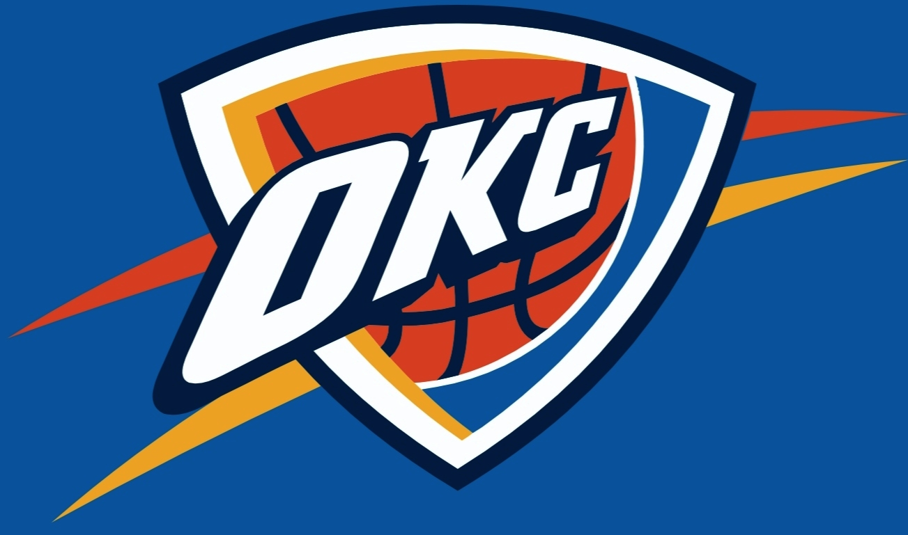
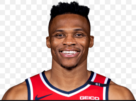

Thunder
The Oklahoma City Thunder are an American professional basketball team based in Oklahoma City. The Thunder compete in the National Basketball Association (NBA) as a member of the league's Western Conference Northwest Division. The team plays its home games at Chesapeake Energy Arena. The Thunder's NBA G League affiliate is the Oklahoma City Blue, which it owns. The Thunder are the only team in the major professional North American sports leagues based in the state of Oklahoma. Oklahoma City previously hosted the New Orleans Hornets (now the Pelicans) for two seasons following devastation caused by Hurricane Katrina in New Orleans. The team was originally established as the Seattle SuperSonics, an expansion team that joined the NBA for the 1967–68 season. The SuperSonics relocated from Seattle, Washington to Oklahoma City in 2008 after a settlement was reached between the ownership group led by Clay Bennett and lawmakers in Seattle following a lawsuit. In Seattle, the SuperSonics qualified for the NBA playoffs 22 times, won their division six times, advanced to three NBA Finals, and won the 1979 NBA Championship. In Oklahoma City, the Thunder qualified for their first playoff berth during the 2009–10 season. They won their first division title as the Thunder in the 2010–11 season and their first Western Conference championship as the Thunder in the 2011–12 season, appearing in the NBA Finals for the fourth time in franchise history and first time since 1996, when the team was based in Seattle. The team has yet to win a championship since moving to Oklahoma City.
Russell Westbrook III (born November 12, 1988) is an American professional basketball player for the Washington Wizards of the National Basketball Association (NBA). He is a nine-time NBA All-Star and earned the NBA Most Valuable Player Award for the 2016–17 season. He is also an eight-time All-NBA Team member, led the league in scoring in 2014–15 and 2016–17, and won back-to-back NBA All-Star Game Most Valuable Player awards in 2015 and 2016. In 2017, the year he won the league MVP award, Westbrook became one of two players in NBA history to average a triple-double for a season, along with Oscar Robertson in 1962. He also set a record for the most triple-doubles in a season, with 42. He went on to average a triple-double the following two seasons also, as well as lead the league in assists and become the first player to lead the league in points and assists in multiple seasons. He ranks second all-time in career triple-doubles in NBA history. Westbrook played college basketball for the UCLA Bruins and earned third-team all-conference honors in the Pac-10. He was selected with the fourth overall pick in the 2008 NBA draft by the Seattle SuperSonics, who then relocated to Oklahoma City that same week. Westbrook has represented the United States national team twice, winning gold medals in the 2010 FIBA World Championship and the 2012 Olympics. In 2019, he was traded to the Houston Rockets and played one season there before being traded again to Washington in 2020.
Shaivonte Aician Gilgeous-Alexander (born July 12, 1998) is a Canadian professional basketball player for the Oklahoma City Thunder of the National Basketball Association (NBA). He played college basketball for the Kentucky Wildcats. Gilgeous-Alexander was selected in the first round of the 2018 NBA draft by the Charlotte Hornets with the 11th overall pick and was traded to the Los Angeles Clippers that same night. He was named to the NBA All-Rookie Second Team in his rookie season with the Clippers before being traded to the Oklahoma City Thunder along with Danilo Gallinari and multiple future first round picks in a deal for NBA All Star Paul George on July 10, 2019.